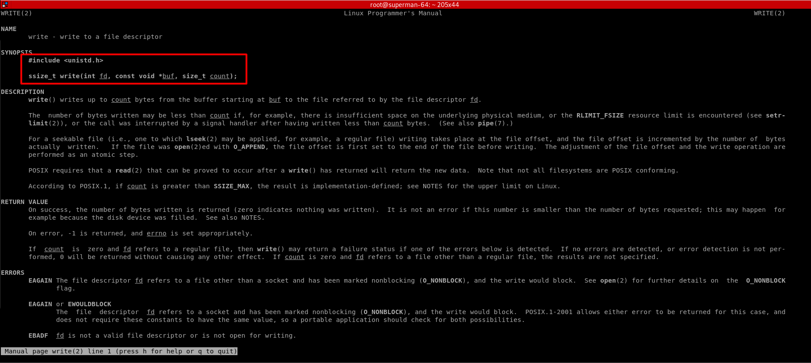
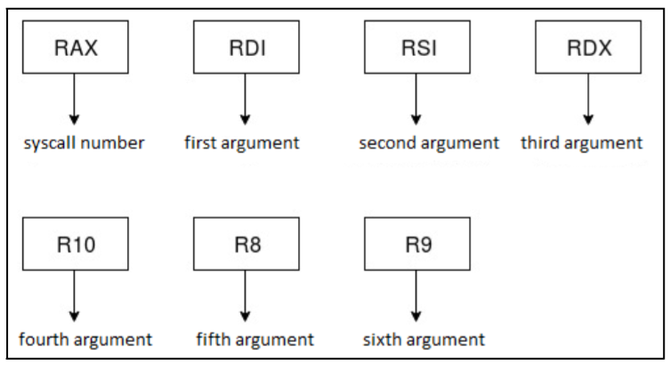
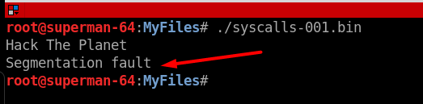
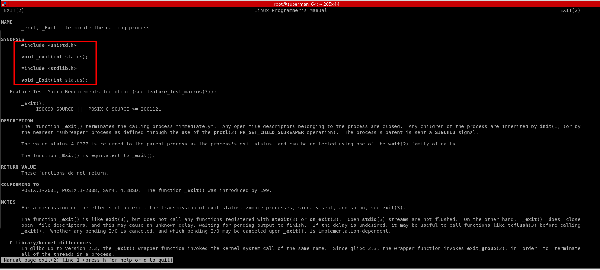
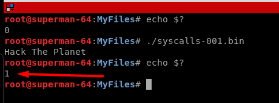
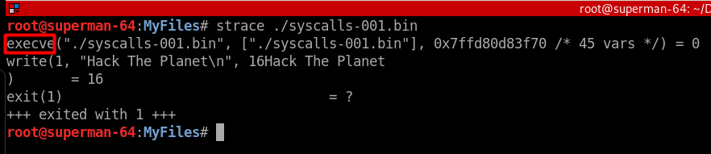
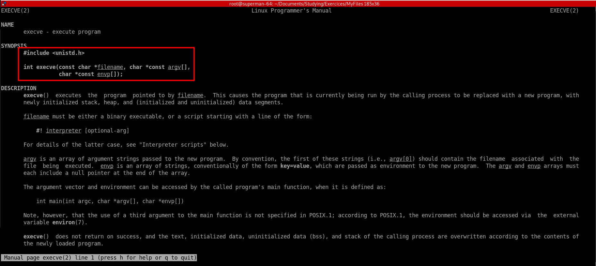
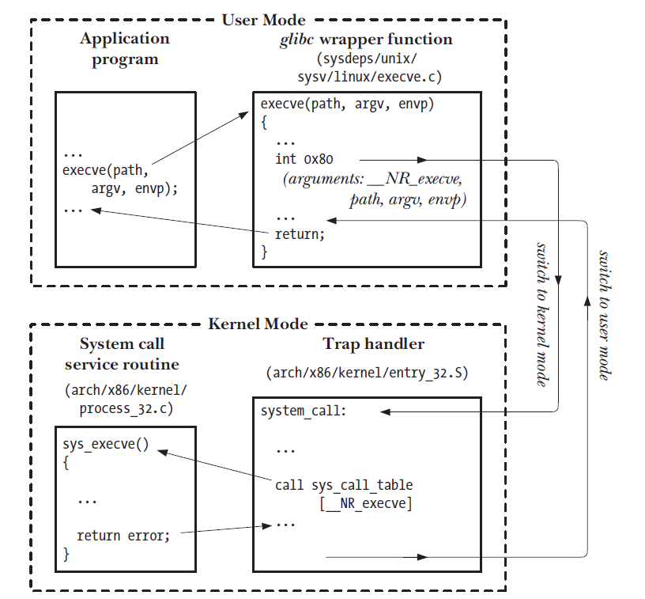
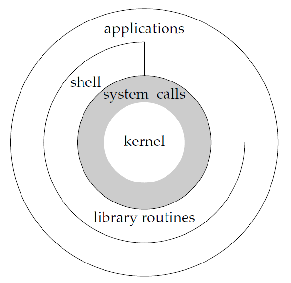

Preface
In this post we’ll see how a process running in the userland can invoke syscalls to run system commands.
Objective
We’ll build a program, an Linux elf64 binary, to use some basics syscalls to print a message on the screen.
Writing the program
For this task we’ll take a look at the write syscall that allow us to print a message on the screen.
In Linux x64, we can use the file .h (header) bellow to find more information about the write syscall:
$ cat /usr/include/x86_64-linux-gnu/asm/unistd_64.h | grep write
#define __NR_write 1
#define __NR_pwrite64 18
#define __NR_writev 20
#define __NR_pwritev 296
#define __NR_process_vm_writev 311
#define __NR_pwritev2 328
Now that we know that must use the number 1 to call the write syscall, let’s check the developer’s manual to learn more about this syscall.
$ man 2 write

As we can see, in this snipped code, the write syscall has three arguments:
ssize_t write(int fd, const void *buf, size_t count);
The first argument is the file descriptor, which has three modes:
0 -> Standard Input -> stdin 1 -> Standard Output -> stdout 2 -> Standard Error -> stderr
Invoking the syscalls
Reading the syscall manual, we learn how to setup our x64 arch registers to invoke syscalls:

- The syscall number goes in RAX
- The first argument goes in RDI
- The second argument goes in RSI
- The third argument goes in RDX
- The forth argument goes in R10
- The fifth argument goes in R8
- The sixth argument goes in R9
The assembly code
For our purpose we’ll choose the standard output 1 to print the message on the screen. The second argument, will be a pointer to the string “Hacking The Planet”, and the third argument will be the count for the string, including spaces, which in our case will be 16.
global _start
section .text
_start:
;
; Setting up the registers to print the message
; using the "write" syscall
;
mov rax, 1
mov rdi, 1
mov rsi, msg
mov rdx, length
syscall
section .data
msg: db 'Hack The Planet',0xa
length: equ $-msg
Compiling the code
Let’s compile aqnd link this assembly pseudo code:
$ nasm -felf64 syscall-001.nasm -o syscall-001.o
$ ld syscall-001.o -o syscall-001.bin
Once we run our program with ./syscall-001.bin we can see that our message “Hack The Planet” is printed out on the screen, but the Segmentation Fault error message appears at the end of execution:

If we want that our program exits nicely, then we have to use exit syscall. Let’s take a deeper look at this issue.
Let’s get back to that header file which contains all the syscalls for Linux x64:
$ cat /usr/include/x86_64-linux-gnu/asm/unistd_64.h | grep exit
#define __NR_exit 60
#define __NR_exit_group 231
#define __NR_exit_group 231
As we can see the exit syscall has the number 60. Let’s check the man page for better understand this syscall.
$man 2 exit

There is only one argument “int status” to define the exit status, for example, 0 (zero) status for no error:
...<snip>
void _exit(int status);
<snip>...
So let’s add the exit syscall portion to our program, and set the exit(1) just for testing.
global _start
section .text
_start:
;
; Setting up the registers to print the message
; using the "write" syscall
;
mov rax, 1
mov rdi, 1
mov rsi, msg
mov rdx, length
syscall
;
; Setting up the registers to call the "exit" syscall
; and exit normally with return 1
; Note: if we comment this the process will finish with
; Segmentation Fault error
;
mov rax, 60
mov rdi, 1
syscall
section .data
msg: db 'Hack The Planet',0xa
length: equ $-msg
Now, we compile the assembly pseudo code:
$ nasm -felf64 syscall-001.nasm -o syscall-001.o
$ ld syscall-001.o -o syscall-001.bin
And after we run the ./syscall-001.bin, we can check that the exit status is “1” as we designed to be.

If we use the strace command to analise this elf32 binary we shall see some interesting stuff. For example, we can see that when we run the binary, the shell uses an execve with our binary passed as an argument along with other environment variables.



